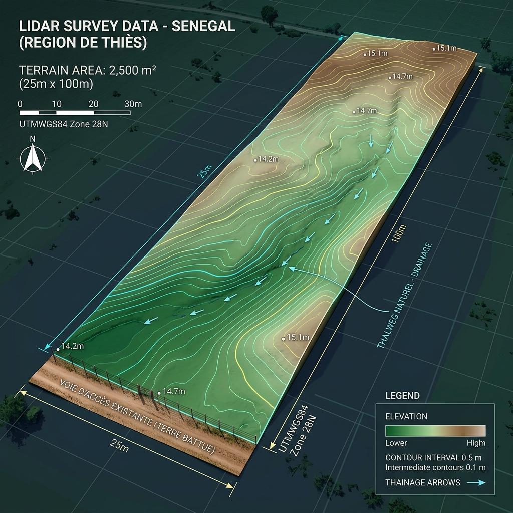

Integrated Arid Oasis
Senegal Master Permaculture Design | 2500m²
01. Mapping & Site Intelligence
LiDAR Topographic Map
High-resolution terrain mapping revealing the subtle 1.2% slope towards the West. This data dictates our gravity-fed swale and greywater systems.

Permaculture Compass & Sun Sector
Analysis of the 14.45°N sun path. Solar harvest peaks at 15° South tilt. Protection against the Northeast Harmattan winds is prioritized in Zone 4.

02. Water Harvesting & Irrigation
Hydraulic Swarm
An integrated approach to water sovereignty in an arid climate.
- Olla Irrigation Targeted Zone 1
- Fog Nets (Exp.) Back Ridge Zone 5
- Rain Storage 20,000L Tower
- Greywater recycling Mulch Basins
The Olla Strategy
Terracotta pots buried in sandy Dior soil. Refill every 3 days. Capillary action delivers water directly to root zones, reducing evaporation by 90%.
03. Multi-Layer Planting Design
Baobab & Mango
Long-term carbon storage and primary economic yields.
Moringa & Cashew
Fast-growing 'Miracle' trees for fodder and cash crops.
Acacia & Neem
Nitrogen fixation, pest control, and windbreaks.
Native Species & Biodiversity
Integration of Senegal Gum (*Acacia senegal*), Ziziphus mauritiana (Jujube), and native grasses like Vetiver for erosion control on swale berms.
04. Animal & Livestock Integration
The Protein Loop
Animals provide high-quality manure for Zai pits and pest control. Geese serve as 'security guards' and weed management in the orchard.
Honey Sovereignty
2-3 Kenyan Top Bar hives located in the Acacia/Baobab buffer zone. Pollination services increase mango yields by 40%.
05. Off-Grid Systems & Waste Loop
Off-Grid Power
5kW Solar Array + 10kWh Storage. powers the borehole pump and post-harvest cold storage.

Black & Greywater
Greywater: Directed to mulch basins around Cashew trees.
Blackwater: EcoSan composting toilets. Safe pathogen reduction via 12-month aerobic decomposition.
06. Financial Projections & ROI
| Category | EST. CAPEX | Annual Yield (Est) | ROI Period |
|---|---|---|---|
| Borehole & Solar Pump | $4,500 | Water Security | Critical |
| Fruit Orchard (Cashew/Mango) | $1,200 | $2,500+ | 4-6 Years |
| Vegetables & Herbs | $500 | $1,800 | < 1 Year |
| Livestock (Goats/Poultry) | $2,000 | $1,200 | 2 Years |
*Calculations based on 2500m² intensive management and Dakar premium market access.
07. Storage & Infrastructure
The Processing Hub
A multi-purpose shed near the road facade (Zone 0) for tool storage, seed saving, and post-harvest drying of Moringa leaves and Cashew nuts. Strategic placement allows for efficient loading onto road transport.